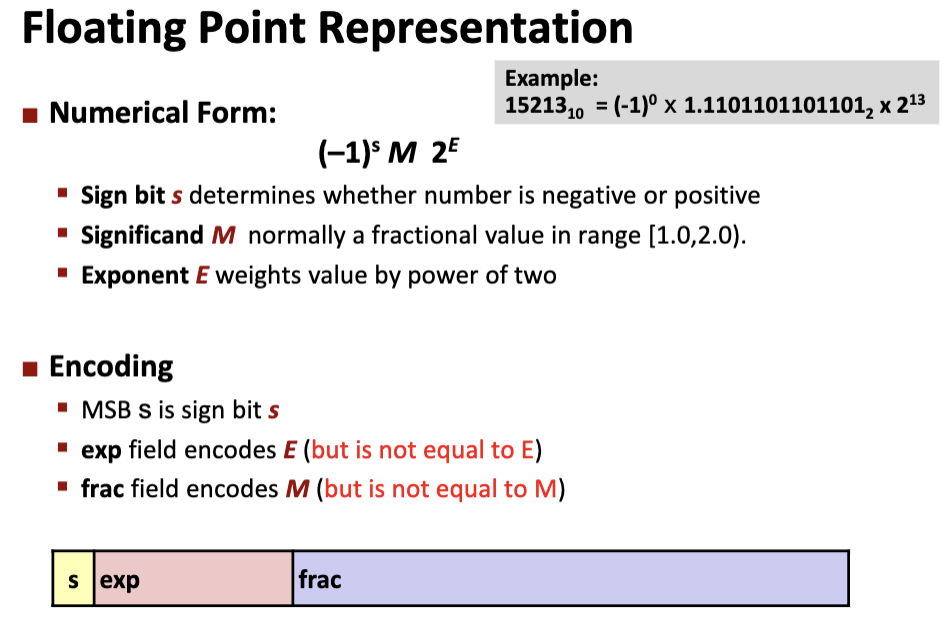
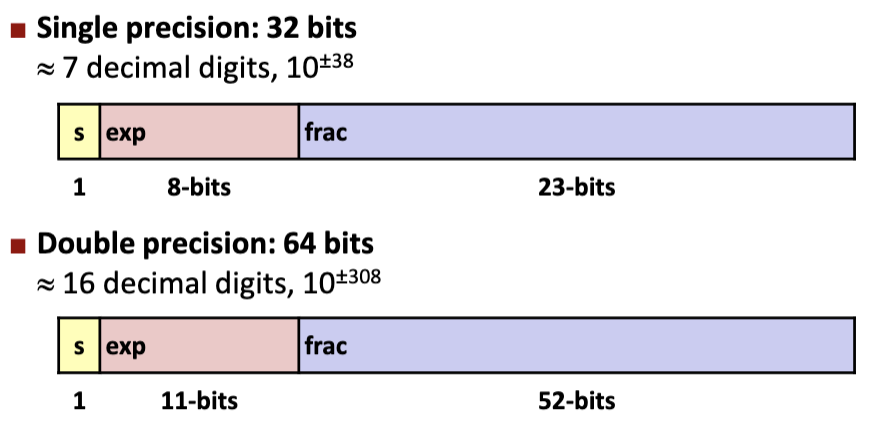
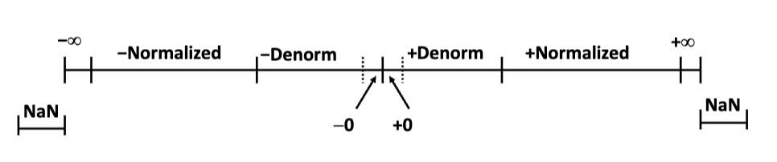
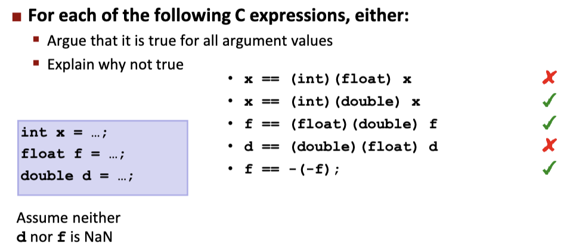

二进制表示方法
- 引入负指数即可；
- 缺陷是无法平衡整数部分的范围和小数范围的精度；
IEEE标准


* exp：阶码；
* frac：尾数；
- 规格化Normalized：exp不全为0且不全为1；
- \(E = exp - Bias = exp - (2^{k-1} -
1),Bias = 2^{k - 1} - 1\) ；
- 32bits：\(Bias = 2^7 -1 = 127,exp\in [1,254]\rightarrow E\in [-126,127]\)；
- 64bits：\(Bias = 2^{10} - 1 = 1023,exp \in [1, 2023]\rightarrow E\in [-1022,1023]\)；
- \(M = 1.frac_{(2)}\)；
- \(E = exp - Bias = exp - (2^{k-1} -
1),Bias = 2^{k - 1} - 1\) ；
- 非规格化Denormalized：exp全为0；
- \(E = 1 - Bias\)；
- \(M = frac\)；
- 特殊值Special Values：exp全为1；
- exp全为1，frac全为0，s = 0表示正无穷\(+\infty\)，s = 1表示负无穷\(-\infty\)；
- exp全为1，frac不为0，表示NaN，不是一个数；

- 分布特点：在0附近均匀分布，到外面扩大（指数分布）；
- 舍入规则：4舍6入5向偶；（不在考试范围内）；
- 类型转换：
- \(double/float\rightarrow int\)
- 直接对实际存储的二进制串进行位截断；
- 体现为向0舍入；
- 超界的情况转化为\(T_{min}\)；
- \(int \rightarrow float\)
- 位数相同，不会截断，但可能会发生舍入；
- \(int/float \rightarrow double\)
- double的有效位数更多，所以能保留精确度；
- \(double \rightarrow float\)
- 能表达的范围变小，可能溢出为\(\infty\)，并且精度降低，可能发生舍入；
- \(double/float\rightarrow int\)

解答：
1. x如果很大，(float)x会发生舍入；
2. double表示范围大于int，所以能精确表示；
3. 同理2；
4. (float)d会发生溢出或舍入；
5. 没问题，-f或者-d就是符号位取反即可；
- 同时，注意浮点数加法运算不满足结合律；